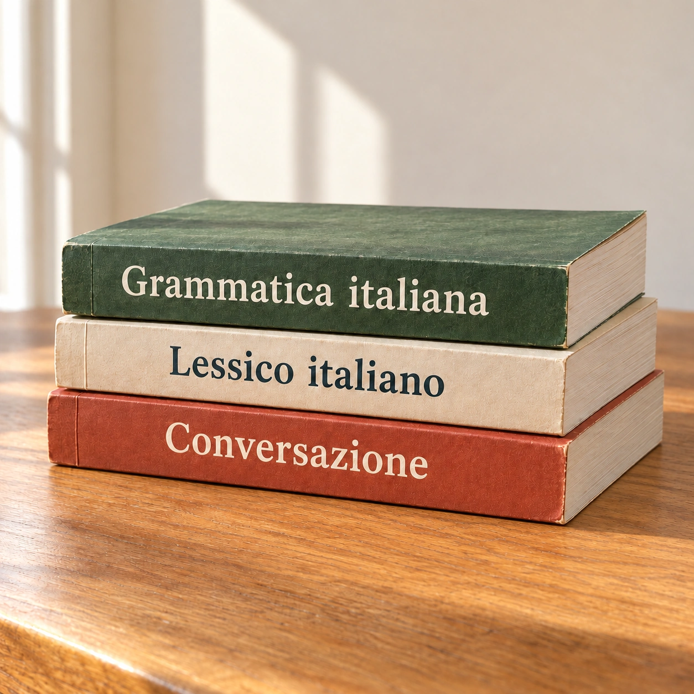
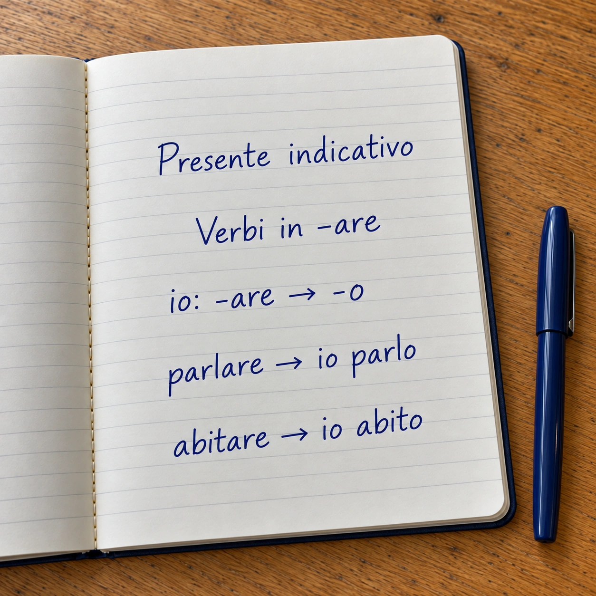

Проверенная методика
Учу по официальным итальянским учебникам. Из них собираю программу под вашу цель. Так в любой момент видно, где вы сейчас и что дальше.

Учу по официальным итальянским учебникам. Из них собираю программу под вашу цель. Так в любой момент видно, где вы сейчас и что дальше.
Видео, аудио и тексты про повседневную жизнь в Италии. Слушаем, как говорят сами итальянцы. Разбираем ситуации, в которые вы попадёте.
Начинаем общаться по-итальянски с первого занятия. Цель одна: разговорить вас. Страх ошибиться уходит сам. Итальянская речь становится для вас естественной.

Объясняю правило. Тут же пробуем его применить. Так грамматика запоминается быстрее. Заодно вижу, как хорошо вы её усвоили.